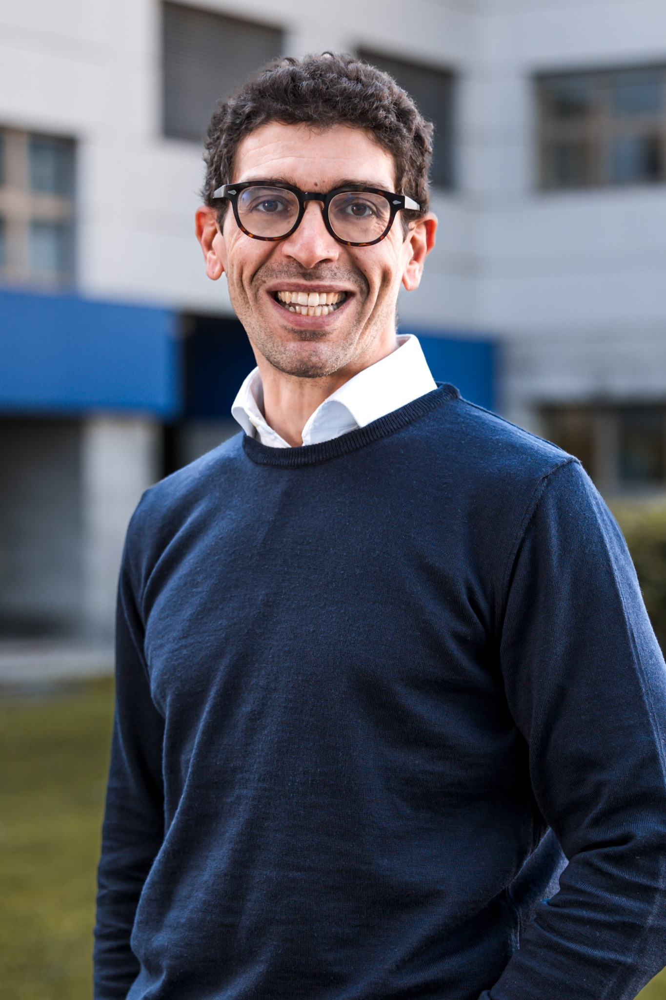

Rosario Crinò
Full Professor of Economics
Department of Economics
University of Bergamo
Office address: Via dei Caniana 2, 24127 Bergamo, Italy
Email: rosario.crino@unibg.it
Research
Publications
Research
Working Papers
Academic profile

Full Professor of Economics
Department of Economics
University of Bergamo
Office address: Via dei Caniana 2, 24127 Bergamo, Italy
Email: rosario.crino@unibg.it